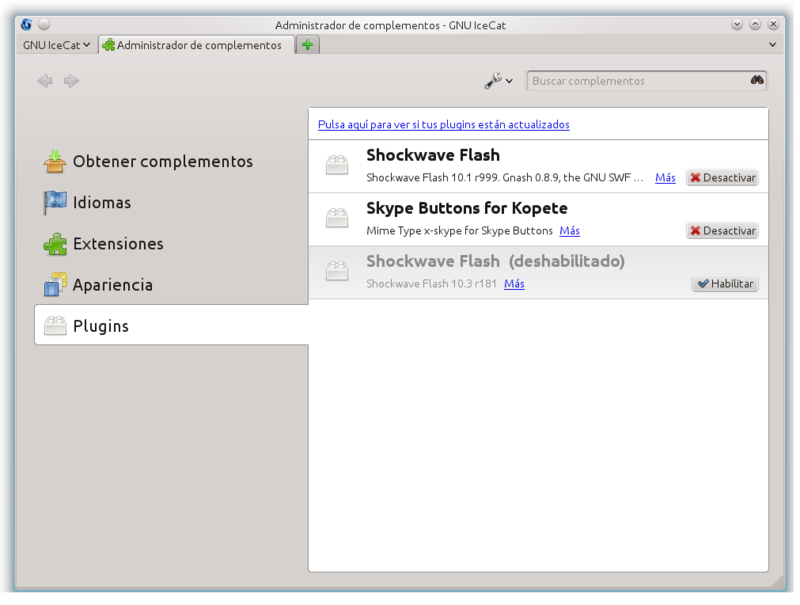
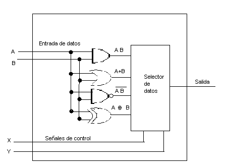
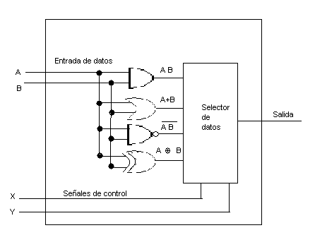
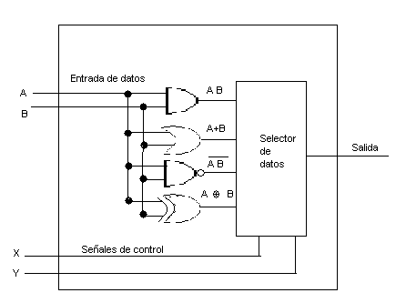

tipos de datos Un tipo de dato es, en esencia, un espacio en memoria con restricciones. Por ejemplo, el tipo "int" representa, generalmente, un conjunto de enteros de 32 bits cuyo rango va desde el -2.147.483.648 al 2.147.483.647, así como las operaciones que se pueden realizar con los enteros, como son la suma, la resta, y la multiplicación. Los colores, por su parte, se representan como tres bytes denotando la cantidad de rojo, verde y azul, y una cadena de caracteres representando el nombre del color (en este caso, las operaciones permitidas incluyen la adición y la sustracción, pero no la multiplicación). Este es un concepto propio de la informática, y más específicamente de los lenguajes de programación, aunque también se encuentra relacionado con nociones similares de la matemática y la lógica. En un sentido amplio, un tipo de datos define un conjunto de valores y las operaciones sobre esos valores. Casi todos los lenguajes de programación explícitamente incluyen la notación del tipo de datos, aunque lenguajes diferentes pueden usar terminologías diferentes. La mayor parte de los lenguajes de programación permiten al programador definir tipos de datos adicionales, normalmente combinando múltiples elementos de otros tipos y definiendo las operaciones del nuevo tipo de dato. Por ejemplo, un programador puede crear un nuevo tipo de dato llamado "Persona", contemplando que el dato interpretado como Persona incluiya un nombre y una fecha de nacimiento. https://es.slideshare.net/triplege/representacin-de-datos-en-un-sistema-computacional
Complementos En informática, un complemento o plug-in es una aplicación (o programa informático) que se relaciona con otra para agregarle una función nueva y generalmente muy específica. Esta aplicación adicional es ejecutada por la aplicación principal e interactúan por medio de la interfaz de programación de aplicaciones.Complemento y plug-in se diferencian en que los plug-in son desarrollados por empresas reconocidas y tienen certificado de seguridad y los complementos pueden ser desarrollados por cualquiera. En informática, un complemento o plug-in es una aplicación (o programa informático) que se relaciona con otra para agregarle una función nueva y generalmente muy específica. Esta aplicación adicional es ejecutada por la aplicación principal e interactúan por medio de la interfaz de programación de aplicaciones.Complemento y plug-in se diferencian en que los plug-in son desarrollados por empresas reconocidas y tienen certificado de seguridad y los complementos pueden ser desarrollados por cualquiera.  Representacion De Un Punto Fijo Complemento 1 es una forma particular de representar números positivos y negativos. Su forma es simple y bastante directa de entender. Todo número positivo posee su bit más significativo igual a 0. Los números negativos se obtienen con sólo negar (o complementar) el número positivo correspondiente. Un ejemplo para el caso de tres bits es mostrado en la tabla 1. Tabla 1: Números binarios en complemento 1 000 0 111 0 001 1 110 –1 010 2 101 –2 011 3 100 –3 De la tabla anterior se puede observar que el número 0 posee dos formas distintas de representación. Ello ha llevado a problemas con la comparación por cero en algoritmos, por lo cual este tipo de representación no es utilizado. El término “complemento 1” se debe a que el número negativo se obtiene sólo complementando el patrón de bits del número positivo que se quiere pasar a negativo. transferencia de datos Instrucciones de transferencia de datos: en este tipo de instrucciones, se transfieren datos desde una localización a otra. Los pasos que se siguen para realizarlo son: Determinación de las direcciones de origen y destino de memoria. Realización de la transformación de memoria virtual a memoria real. Comprobación de la caché. Inicio del proceso de lectura/escritura en la memoria. Instrucciones aritméticas: pueden implicar transferencia de datos antes y/o después. Realizan operaciones aritméticas de las que se encarga la ALU. Se pueden clasificar en de 1 operando (valor absoluto, negación) y 2 operandos (suma, resta). Instrucciones lógicas: al igual que las aritméticas, la ALU se encarga de realizar estas operaciones, que en este caso son de tipo lógico. Instrucciones de conversión: similares a las aritméticas y lógicas. Pueden implicar lógica especial para realizar la conversión. Instrucciones de transferencia de control: actualizan el contador de programa (PC). Administran las llamadas/retornos a las subrutinas, el paso de parámetros y el enlazado. Instrucciones de E/S (entrada/salida): administran los comandos de entrada/salida. Si hay un mapa de memoria de entrada/salida, determina la dirección de este mapa. micro operaciones logicas El diseño de sistemas digitales utiliza de manera invariable un enfoque modular. Los módulos se construyen a partir de componentes digitales como registros, decodificadores, elementos aritméticos y lógica de control. Los diferentes módulos están interconectados con los datos y las trayectorias de control comunes para formar un sistema de computadora digital. Los módulos digitales se definen mejor por los registros que contienen y las operaciones que realizan sobre los datos que almacenan. Las operaciones que se ejecutan sobre los datos almacenados en los registros se llaman microoperaciones. Una microoperación es una operación básica realizada sobre la información almacenada en uno o más registros. El resultado de la operación puede sustituir la información binaria anterior de un registro o puede transferirse a otro. Algunos ejemplos de microoperaciones son desplazar, contar, borrar y cargar. 
Representacion De Un Punto Fijo Complemento 1 es una forma particular de representar números positivos y negativos. Su forma es simple y bastante directa de entender. Todo número positivo posee su bit más significativo igual a 0. Los números negativos se obtienen con sólo negar (o complementar) el número positivo correspondiente. Un ejemplo para el caso de tres bits es mostrado en la tabla 1. Tabla 1: Números binarios en complemento 1 000 0 111 0 001 1 110 –1 010 2 101 –2 011 3 100 –3 De la tabla anterior se puede observar que el número 0 posee dos formas distintas de representación. Ello ha llevado a problemas con la comparación por cero en algoritmos, por lo cual este tipo de representación no es utilizado. El término “complemento 1” se debe a que el número negativo se obtiene sólo complementando el patrón de bits del número positivo que se quiere pasar a negativo. transferencia de datos Instrucciones de transferencia de datos: en este tipo de instrucciones, se transfieren datos desde una localización a otra. Los pasos que se siguen para realizarlo son: Determinación de las direcciones de origen y destino de memoria. Realización de la transformación de memoria virtual a memoria real. Comprobación de la caché. Inicio del proceso de lectura/escritura en la memoria. Instrucciones aritméticas: pueden implicar transferencia de datos antes y/o después. Realizan operaciones aritméticas de las que se encarga la ALU. Se pueden clasificar en de 1 operando (valor absoluto, negación) y 2 operandos (suma, resta). Instrucciones lógicas: al igual que las aritméticas, la ALU se encarga de realizar estas operaciones, que en este caso son de tipo lógico. Instrucciones de conversión: similares a las aritméticas y lógicas. Pueden implicar lógica especial para realizar la conversión. Instrucciones de transferencia de control: actualizan el contador de programa (PC). Administran las llamadas/retornos a las subrutinas, el paso de parámetros y el enlazado. Instrucciones de E/S (entrada/salida): administran los comandos de entrada/salida. Si hay un mapa de memoria de entrada/salida, determina la dirección de este mapa. micro operaciones logicas El diseño de sistemas digitales utiliza de manera invariable un enfoque modular. Los módulos se construyen a partir de componentes digitales como registros, decodificadores, elementos aritméticos y lógica de control. Los diferentes módulos están interconectados con los datos y las trayectorias de control comunes para formar un sistema de computadora digital. Los módulos digitales se definen mejor por los registros que contienen y las operaciones que realizan sobre los datos que almacenan. Las operaciones que se ejecutan sobre los datos almacenados en los registros se llaman microoperaciones. Una microoperación es una operación básica realizada sobre la información almacenada en uno o más registros. El resultado de la operación puede sustituir la información binaria anterior de un registro o puede transferirse a otro. Algunos ejemplos de microoperaciones son desplazar, contar, borrar y cargar. 
transferencia de datos Instrucciones de transferencia de datos: en este tipo de instrucciones, se transfieren datos desde una localización a otra. Los pasos que se siguen para realizarlo son: Determinación de las direcciones de origen y destino de memoria. Realización de la transformación de memoria virtual a memoria real. Comprobación de la caché. Inicio del proceso de lectura/escritura en la memoria. Instrucciones aritméticas: pueden implicar transferencia de datos antes y/o después. Realizan operaciones aritméticas de las que se encarga la ALU. Se pueden clasificar en de 1 operando (valor absoluto, negación) y 2 operandos (suma, resta). Instrucciones lógicas: al igual que las aritméticas, la ALU se encarga de realizar estas operaciones, que en este caso son de tipo lógico. Instrucciones de conversión: similares a las aritméticas y lógicas. Pueden implicar lógica especial para realizar la conversión. Instrucciones de transferencia de control: actualizan el contador de programa (PC). Administran las llamadas/retornos a las subrutinas, el paso de parámetros y el enlazado. Instrucciones de E/S (entrada/salida): administran los comandos de entrada/salida. Si hay un mapa de memoria de entrada/salida, determina la dirección de este mapa. micro operaciones logicas El diseño de sistemas digitales utiliza de manera invariable un enfoque modular. Los módulos se construyen a partir de componentes digitales como registros, decodificadores, elementos aritméticos y lógica de control. Los diferentes módulos están interconectados con los datos y las trayectorias de control comunes para formar un sistema de computadora digital. Los módulos digitales se definen mejor por los registros que contienen y las operaciones que realizan sobre los datos que almacenan. Las operaciones que se ejecutan sobre los datos almacenados en los registros se llaman microoperaciones. Una microoperación es una operación básica realizada sobre la información almacenada en uno o más registros. El resultado de la operación puede sustituir la información binaria anterior de un registro o puede transferirse a otro. Algunos ejemplos de microoperaciones son desplazar, contar, borrar y cargar. 